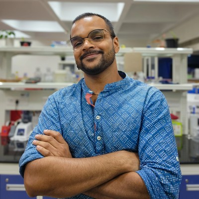

Arun Viswanathan
PhD Candidate & Senior Research Fellow at Rajiv Gandhi Centre for Biotechnology (RGCB)
Thiruvananthapuram, Kerala, India
I am a PhD candidate and Senior Research Fellow at RGCB, working on obesity-driven pancreatic ductal adenocarcinoma (PDAC) under Dr. K. B. Harikumar. My work centres on STAT3 signalling and how it reshapes the tumour immune microenvironment, and draws on a range of methods depending on the question, including spatial transcriptomics, LC-MS/MS proteomics, metabolomics, and Bayesian statistical modelling, to understand how obesity drives pancreatic cancer progression. My academic foundation is in Biochemistry & Molecular Biology (Pondicherry University).
Research Interests
My work sits at the intersection of tumour immunology, metabolism, and computational biology:
Publications
Peer-reviewed articles & preprints
-
2026
Overweight status drives early tumor microenvironment reprogramming in pancreatic ductal adenocarcinoma: a cell-type-resolved Bayesian hierarchical modeling and interactome analysis. bioRxiv. Preprint
-
2026
Uttroside B, a US FDA-designated “Orphan Drug,” mitigates the development of hepatocellular carcinoma and its pulmonary metastasis via EGFR/ERK-mediated inhibition of SREBP-1 and STAT-3. Cell Death Discovery.
-
2024
Targeting acid ceramidase enhances antitumor immune response in colorectal cancer. Journal of Advanced Research, 65, 73–87.
-
2023
Sphingosine 1-phosphate signaling during infection and immunity. Progress in Lipid Research, 92, 101251.
-
2018
Synthesis and characterisation of arsenic nanoparticles and its interaction with DNA and cytotoxic potential on breast cancer cells. Chemico-Biological Interactions, 295, 73–83.
View full list on Google Scholar →
Conference presentation
-
2026
STAT3-Mediated Immune Dysfunction and… (Abstract P29) Cancer Research, 86(13_Supplement).
Presented with support of the Travel Award, Frontiers in Cancer Science 2025 (Singapore).
Honors & awards
- Best Oral Presentation (2nd place), Global Cancer Consortium Conference (GCC 2024)
- Best Poster Presentation (Top 5), National Symposium for Biotechnology for Sustainable Development, 2025
- Travel Award, Frontiers in Cancer Science 2025, Singapore
Curriculum Vitae
Download CV (PDF)Experience
- Senior Research Fellow & PhD Candidate Rajiv Gandhi Centre for Biotechnology 2022 – present
- Junior Research Fellow & PhD Candidate Rajiv Gandhi Centre for Biotechnology 2020 – 2022
- Guest Lecturer Al Salama College of Optometry & Management Studies 2017 – 2020
Education
- PhD, Biotechnology Rajiv Gandhi Centre for Biotechnology 2020 – present
- M.Sc., Biochemistry & Molecular Biology Pondicherry University 2014 – 2016
- B.Sc.Ed. Regional Institute of Education, Mysore 2009 – 2013
Contact
arunviswanathan91@gmail.com · arunv@rgcb.res.in
Rajiv Gandhi Centre for Biotechnology, Thiruvananthapuram, Kerala, India